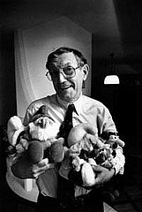

Peyo
Pierre Culliford, znany jako Peyo (ur. 25 czerwca 1928 w Brukseli, zm. 24 grudnia 1992 tamże) – belgijski ilustrator i autor komiksów, najbardziej znany jako twórca Smerfów.
Życiorys
Pochodził z rodziny belgijsko-brytyjskiej. Pseudonim artystyczny zawdzięcza kuzynom ze strony ojca – Anglika, którzy w ten sposób wymawiali jego zdrobniałe imię Pierrot.
Po ukończeniu Akademii Sztuk Pięknych rozpoczął pracę w małej wytwórni filmów animowanych CBA, gdzie poznał m.in. André Franquina (twórcę komiksu Gaston) i Morrisa (twórcę postaci Lucky Luke’a).

Swoje pierwsze komiksy stworzył dla belgijskiej gazety La Dernière Heure, jednak wkrótce potem nawiązał stałą współpracę z belgijskim ilustrowanym tygodnikiem dla dzieci Le Journal de Spirou. Na jego łamach opublikował serie Poussy, Pierrot i Benoît Brisefer, jednak jego ulubionym dziełem stał się komiks Johan et Pirlouit (Johan i Sójka), który stworzył w 1947. Na potrzeby jednego z odcinków Johan et Pirlouit zatytułowanego La flûte à six trous i opublikowanego 23 października 1958 Peyo stworzył postacie smerfów, które spotkały się z tak życzliwym przyjęciem ze strony czytelników, iż Peyo zdecydował się poświęcić im odrębną serię komiksów.
W latach 60. gdy Smerfy stały się bardzo popularne, Peyo otworzył własne studio filmów animowanych. Mimo jednak, iż stale firmował je swoim nazwiskiem, Smerfy były tworzone przez innych rysowników, natomiast sam Peyo poświęcał się głównie pracy nad Johan et Pirlouit.
Zmarł na atak serca w wieku 64 lat w wigilię świąt Bożego Narodzenia 1992.